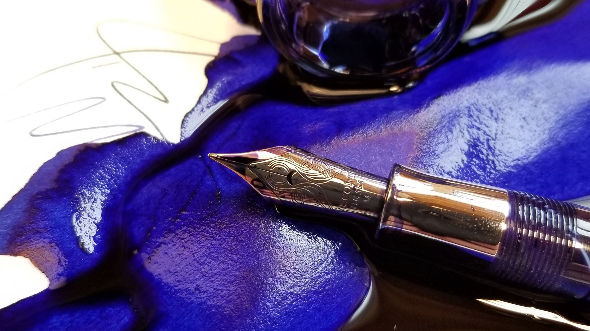
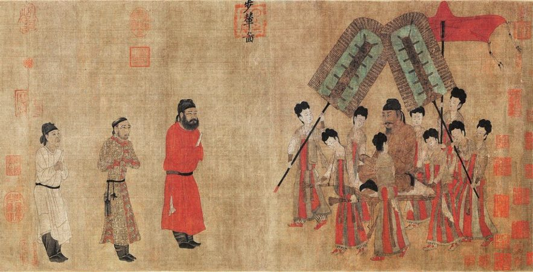

Hvað er blek?
Blek er fljótandi efni sem er oft notað til að mynda texta eða mynstur á blað, oftast í gegnum blýant, pennann eða prentara. Það er samsett úr mismunandi efnum, eins og vatni, litarefnum og efni sem hraðar þornar. Í prenti og listum er ink einnig algengt og nauðsynlegt efni.
Hvert kom blek?
Fyrsta notkun á prentbleki fannst í Kína, um það bil 23. öld f.Kr. Kínverjar bjuggu til litarefni með því að nota plöntur og dýr sem hægt var að mala í grafít sem síðan var borið á yfirborð með málningarpenslum. Litarefni voru unnin úr lífrænum efnum eins og plöntum og dýrum, sem voru möluð með grafíti til að framleiða blek
Hvernig virkar blek í prentara?
Í bleksprautuprentara samanstanda prenthylkin af röð af pínulitlum hólfum, sem hvert inniheldur hitaeiningu. Rafstraumur hitar frumefnið, sem veldur því að blek kúla innan hólfsins. Aukningin á þrýstingi knýr eða úðar blekdropa á pappírinn úr viðeigandi hólfinu.
Hvert kom blek?
Fyrsta notkun á prentbleki fannst í Kína, um það bil 23. öld f.Kr. Kínverjar bjuggu til litarefni með því að nota plöntur og dýr sem hægt var að mala í grafít sem síðan var borið á yfirborð með málningarpenslum. Litarefni voru unnin úr lífrænum efnum eins og plöntum og dýrum, sem voru möluð með grafíti til að framleiða blek